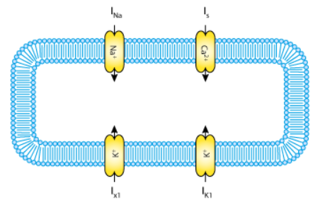
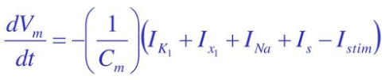
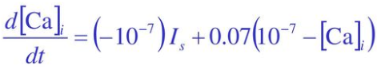

Beeler Reuter Model
This model (1977) was developed to describe the membrane action potentials of mammalian ventricular myocardial fibres. In this model the total ionic flux is divided into four individual ionic currents formulated mathematically in terms of Hodgkin—Huxley type equations.
Model includes the excitatory inward sodium current INa, time-independent outward potassium current IK1, time-dependent outward current Ix1 and slow inward current Is primarily carried by calcium ions. The total ionic current uses eight variables: membrane potential Vm, intracellular calcium concentration [Ca] and six gating variables ( m, h, j, x1, f and j ). Model equations with 4 ionic membrane currents and a stimulus current Istim are expressed as:
Where membrane capacitance Cm = 1 μ F/cm2.
References:
G. W. Beeler, H. Reuter "Reconstruction of the action potential of ventricular myocardial fibres", J Physiol. 1977 Jun; 268(1): 177–210.